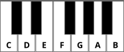

You’ve probably heard people say things like “It’s in the key of G” or “It’s in A.” You may even have said things like that, yourself. But, what exactly is a key and what does it mean to be in one and why do I care?
First, we should probably talk about notes. In modern western music, we use a twelve-tone equal temperament tuning. This means that within a single octave, there are twelve notes or pitches. (On a piano keyboard, an octave is every key from one C up to (or down to), but not including, the next C.) We name them with letters of the alphabet:
A B C D E F G
You may have noticed, there are only seven names - but, we just said there are twelve notes. This is because the letters, when they appear without any additional information (like a ♯ or a ♭), are referring to natural notes. We can identify these, for the most part, with the white keys on a piano. The additional names will be discussed in Lesson 2.
